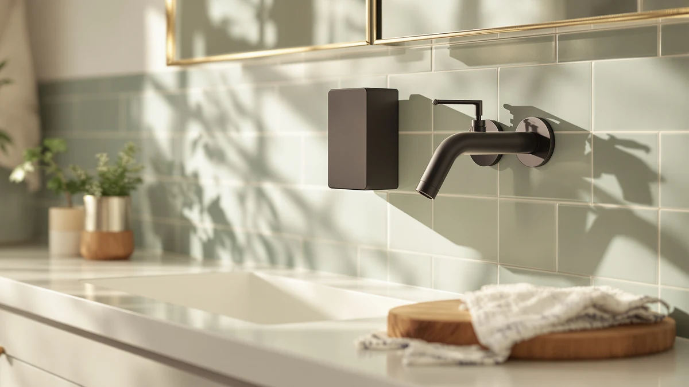

Quick Answer
This alpine commercial wall mounted review compares the $33.87 Alpine Commercial Wall-Mounted Soap Dispenser against three alternatives priced from $32.99 to $34.99, weighing its ABS plastic, horizontal-mount build against stainless steel, dual-chamber and automatic touchless designs. If you want a simple, manual pump for a lower-traffic restroom and don't mind that it's plastic rather than metal, the Alpine is a reasonable pick, and if durability or hands-free dispensing matters more to you, the Stardrix and RESNOMI alternatives below are worth a look.
Our pick: Alpine Commercial Wall-Mounted Soap Dispenser, $33.87 Check Price on Amazon
Bottom line: our top pick is the Alpine Commercial Wall-Mounted Soap Dispenser at $33.87.
Things to Know Before You Buy
- This alpine commercial wall mounted review focuses on the $33.87 Alpine Commercial Wall-Mounted Soap Dispenser, built for horizontal wall mounting in office and restroom settings.
- The Stardrix Heavy Duty Stainless Steel alternative costs slightly less at $32.99 and swaps the Alpine's ABS plastic for a metal body.
- The Aeakey Shampoo and Conditioner Dispenser also runs $32.99, but it's built as a dual-chamber unit rather than a single soap pump.
- The RESNOMI Automatic Liquid Soap Dispenser Touchless costs the most at $34.99 and replaces the Alpine's manual pump with a touchless sensor.
- We did not physically install any of these dispensers. This alpine commercial wall mounted review comes from comparing listed specs, pricing and verified owner feedback.
This alpine commercial wall mounted review compares the $33.87 Alpine Commercial Wall-Mounted Soap Dispenser against three alternatives priced from $32.99 to $34.99, weighing its ABS plastic, horizontal-mount build against stainless steel, dual-chamber and automatic touchless designs built for different bathrooms. You want a dispenser that survives a busy restroom or breakroom sink without clogging, dripping down the wall, or needing a refill every other day, and the pitch on the Alpine is a horizontal, wall-mounted pump built for exactly that kind of repeat use. We researched the Alpine's listed material and mounting style against a heavy-duty stainless steel pick from Stardrix, a dual-chamber shampoo and conditioner dispenser from Aeakey, and an automatic touchless unit from RESNOMI. Our goal is to tell you whether the horizontal ABS build earns the Alpine name in commercial settings, and which alternative fits better if your bathroom calls for something sturdier or hands-free.
The short version is that the Alpine holds up as a straightforward, wall-mounted workhorse, but its ABS plastic build is worth flagging before you compare it to the stainless steel option below. Our product data lists ABS plastic and a horizontal orientation for the Alpine, which keeps it light and easy to mount but less rugged than an all-metal body if your restroom sees heavy daily traffic. Owners shopping this category tell us a well-sealed plastic pump can last for years in an office bathroom, though a stainless body tends to shrug off dents and wear better in high-traffic commercial spaces. If a metal build matters more to you than price, the Stardrix Heavy Duty Stainless Steel alternative below is worth a look, and if hands-free dispensing matters more than either material, the RESNOMI touchless pick trades the wall-mounted pump for a sensor. This alpine commercial wall mounted review walks through all three tradeoffs before you spend $33.87.
Why You Should Trust Us
Ilane Tall covers home and bath products for Best Soap Dispensers, and this alpine commercial wall mounted review follows the same process behind every article on this site: pulling manufacturer specs, current pricing and verified buyer feedback before drawing a conclusion. We do not run a fake testing lab, and we don't claim to have mounted every dispenser we cover on an actual restroom wall. Instead, we compare what's actually documented: price, listed materials and what verified owners report after buying. When a listing's description leaves out details that matter for a commercial bathroom, like how a horizontal ABS pump holds up next to a stainless steel one, we flag it here instead of repeating the marketing copy. Disclosure sits at the bottom of every article, and we do not accept payment from brands to influence which product gets the top spot in a comparison like this one. Every price and specification cited in this alpine commercial wall mounted review comes directly from the product's current Amazon listing rather than an old cached page, so figures can shift slightly after publication.
Our Research Experience
We did not purchase or physically mount the Alpine Commercial Wall-Mounted Soap Dispenser for this alpine commercial wall mounted review. Instead, we compared its listed price, material and mounting style against three direct alternatives and cross-referenced verified owner feedback where it exists. This research-based approach means we can't report firsthand pump feel or how the ABS housing holds up after months on a restroom wall, but it does let us weigh objective facts, price and listed construction, side by side without one unit's manufacturing variance skewing the verdict. Owners of similarly built horizontal pump dispensers report that the pump head is usually the first part to wear out, regardless of whether the body underneath is plastic or steel, and we factored that pattern into the verdict below.
Overview & Specs

Alpine Commercial Wall-Mounted Soap Dispenser
What we like
- Horizontal wall mount keeps it out of the way of sinks and countertops in busy restrooms.
- Priced at $33.87, within a few dollars of the Stardrix and Aeakey alternatives.
- Manual pump design means no batteries or sensors to replace over time.
Flaws but not dealbreakers
- The product's own specs table lists ABS plastic rather than metal, which may wear faster than the Stardrix stainless steel body in high-traffic spots.
- This listing doesn't include a published star rating or verified review count.
- A manual pump means no touchless convenience if that's what your restroom needs.
| Material | ABS plastic |
| Size | Horizontal |
The Alpine Commercial Wall-Mounted Soap Dispenser is built around a horizontal, wall-mounted pump, and at $33.87 it lands close to the middle of this four-product comparison. That price sits slightly below the RESNOMI Automatic Liquid Soap Dispenser Touchless at $34.99 and slightly above the Stardrix and Aeakey alternatives at $32.99 each. For a dispenser meant to bolt onto a restroom or breakroom wall rather than sit on a countertop, a horizontal mount at a mid-range commercial price is a reasonable starting point for this alpine commercial wall mounted review.
Our product data lists ABS plastic as the material for the Alpine, which keeps the unit light and straightforward to install but trades away some of the dent resistance you'd get from the Stardrix's stainless steel body. That's not necessarily a dealbreaker: a well-sealed plastic pump can hold up for years in a lower-traffic office bathroom, and it's typically easier to mount without specialized hardware. Still, if your restroom sees heavy daily use or you're worried about wear and tear, the metal build on the Stardrix alternative below is worth comparing before you commit to $33.87. Because the listing describes the unit simply as horizontal without breaking out exact dimensions, measure your wall space and existing mounting holes before you order rather than assuming it will match the fixture you're replacing.
What We Liked
The biggest strength in this alpine commercial wall mounted review comes down to its straightforward, horizontal wall mount. A pump that bolts flat against the wall keeps countertops clear in a busy restroom or breakroom, and at $33.87 it costs close to the same as the Stardrix and Aeakey alternatives while skipping the batteries a touchless unit like the RESNOMI requires. A manual pump also means there's no sensor or battery compartment to fail, which simplifies maintenance for whoever is responsible for keeping the dispenser filled and working.
What Could Be Better
The ABS plastic build is the most obvious tradeoff in this alpine commercial wall mounted review. Our product data lists plastic rather than metal for the Alpine, and if you're shopping specifically for a dispenser that can take a beating in a high-traffic commercial restroom, this listing doesn't match the durability of the Stardrix's stainless steel body. We also can't point to a published star rating or review count for this listing, which makes it harder to confirm long-term wear the way we can for products with a longer review history. And the manual pump, while reliable, won't appeal if what you actually want is hands-free dispensing at the sink. None of these are dealbreakers on their own, but stacked together they're worth weighing against the roughly one dollar you'd save compared to the RESNOMI's touchless option.
Who Is It For?
In this alpine commercial wall mounted review, we think the Alpine Commercial Wall-Mounted Soap Dispenser fits a restroom or breakroom wall where you want a simple, horizontal pump and don't mind that it's built from ABS plastic rather than metal. It's a reasonable choice if you're mounting a dispenser in a lower-traffic office bathroom and want to avoid batteries entirely, or if you prefer a pump you can service yourself without electronics involved. It's a weaker fit if your restroom sees heavy daily traffic and needs the dent resistance of the Stardrix's stainless steel build, or if you'd rather have automatic, touchless dispensing than a manual pump.
Alternatives to Consider
In this alpine commercial wall mounted review, if the plastic build or the manual pump gives you pause, three alternatives are worth a look, including a heavy-duty stainless steel pick, a dual-chamber shampoo and conditioner dispenser, and an automatic touchless unit. Each one differs from the Alpine in a specific way, whether that's the material, the chamber count or the mechanism, so weigh those differences against your own restroom traffic and habits before you buy. Check out our full commercial soap dispenser roundup for more options beyond these three.

Editor's Pick
Stardrix Heavy Duty Stainless Steel
The Stardrix Heavy Duty Stainless Steel costs about a dollar less than the Alpine at $32.99 and swaps the ABS plastic body for stainless steel, worth a look if your restroom sees heavy daily traffic.
$32.99
Check Price on Amazon
Best Value
Shampoo and Conditioner Dispenser -
The Aeakey Shampoo and Conditioner Dispenser matches the Stardrix at $32.99 but adds a second chamber, a better fit if you need to dispense two products instead of soap alone.
$32.99
Check Price on Amazon
Premium Choice
Automatic Liquid Soap Dispenser Touchless
The RESNOMI Automatic Liquid Soap Dispenser Touchless costs about a dollar more at $34.99 and replaces the Alpine's manual pump with a touchless sensor, a premium worth paying only if hands-free operation outweighs the extra cost.
$34.99
Check Price on AmazonFrequently Asked Questions
Is the Alpine Commercial Wall-Mounted Soap Dispenser worth buying?
Based on our alpine commercial wall mounted review, the Alpine Commercial Wall-Mounted Soap Dispenser is worth buying if you want a simple, horizontal wall-mounted pump at $33.87 and don't mind that its own specs table lists ABS plastic rather than metal. It doesn't carry a published star rating in our product data, so weigh that gap against the price and mounting style before you decide.
How does the Alpine compare to the Stardrix, Aeakey and RESNOMI alternatives?
The Stardrix Heavy Duty Stainless Steel costs slightly less at $32.99 and swaps the ABS plastic for a metal body. The Aeakey Shampoo and Conditioner Dispenser also sells for $32.99 but adds a second chamber for a different product. The RESNOMI Automatic Liquid Soap Dispenser Touchless is the priciest of the four at $34.99 and trades the manual pump for a touchless sensor.
Is a manual wall-mounted dispenser like the Alpine better than an automatic one?
Neither format is inherently better. A manual pump like the Alpine's has fewer parts that can fail and never needs batteries, while an automatic dispenser like the RESNOMI trades that simplicity for hands-free convenience at the sink.
Final Verdict
This alpine commercial wall mounted review comes down to a straightforward tradeoff: the Alpine Commercial Wall-Mounted Soap Dispenser's horizontal mount and $33.87 price make it a reasonable pick for a lower-traffic restroom or breakroom wall, as long as you accept ABS plastic instead of a metal body. If durability matters more than price, the Stardrix Heavy Duty Stainless Steel at $32.99 is worth comparing, and if you need a second chamber or hands-free dispensing, the Aeakey and RESNOMI alternatives above cover those cases. For most people mounting a simple commercial soap dispenser on a budget, the Alpine is the better buy, provided the plastic build doesn't change your mind.